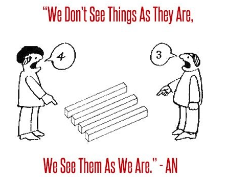

The Gap Between Our Perception And Reality
By Kaitlyn Gebo
Politicians, philosophers, and scientists all know there is a gap between our perception and reality: between what we see, and what is truly happening. This gap means that we don’t understand things fully and could be easily confused in situations where we rely on our perception and not on our understanding of reality.
This gap is bringing the United States close to a civil war, according to Vox. People are buying guns to protect themselves from others, all because they watch different news stations and/or have a difference of opinion. A situation like this shows how dangerous the gap can be, and how we need to work on understanding reality.
Things that we see, without reasoning, could be wrong. We shouldn’t always just believe everything that we always see. Anything that our intuition can see, can be wrong, as a study done by Christopher Chabris and Daniel Simons shows. Intuition is the ability to understand things immediately without reasoning. These conclusions that our intuition leads us to cannot always help us as much as we think they could. Our intuition can lead us to think that we have more knowledge about the situations around us than we truly do. Seeing one thing and focusing on it could lead us to miss other key details that could help us more than what we were originally focusing on.
This leads us to believe that only what we see is there, and nothing else is. This isn’t true. Things we can see, we can only see certain things with context, and if we don’t have that context, then we could be led to false conclusions. An example of this is Nathaniel Robinson's sculpture.Things will not always be set in front of us, and we may have to know more than we already do. Misleading topics can be easy to fool us, and we need to be careful about being fooled. Kayfabe is a good example for this; to the outsiders, they believe the fighting is real, however the insiders know it is staged. Topics can be seen from the outside and could mislead us since we will not know much about it.
Not everyone that we meet online is as they seem to be. There is a gap between what we do know and who is behind that screen, talking to us. Our senses could lead us to false conclusions about situations and people. The situation in Ottowa is an example of this. Due to a voiceover on a video, people believed that a protester was being trampled, when in reality it hadn't happened. We should be careful about what we trust, and make sure that we are careful with things that we do. Misleading topics could lead to us getting into dangerous situations, and ruining people’s lives. Not everything in our life is going to be as it seems, states Helier Robinson.
In other words, we should try and close the gap between our perception and reality. We need to realize that reality is usually different than what our perception lets us see. Anything that we see without reasoning can be wrong, and we need to be aware of this. Not everything is as it seems, and we can be misled about topics if we don’t look more into them. We need to close the gap between what we think we see and what is truly happening.
Sources- Bet You Didn't See That Gorilla By NPR
- Police Horses 'Trample'Demonstrators At Freedom Convoy Protest In Otowa
- Kayfabe, What Is It?
- Ask A Philosopher: Appearance And Reality In The 21st Century, By Helier Robinson.
- Social Media Impacts Our Political Issues, By Rani Molla.
- Nathaniel Robinson's Sculpture That Teases Our Perception, By Ken Johnson.